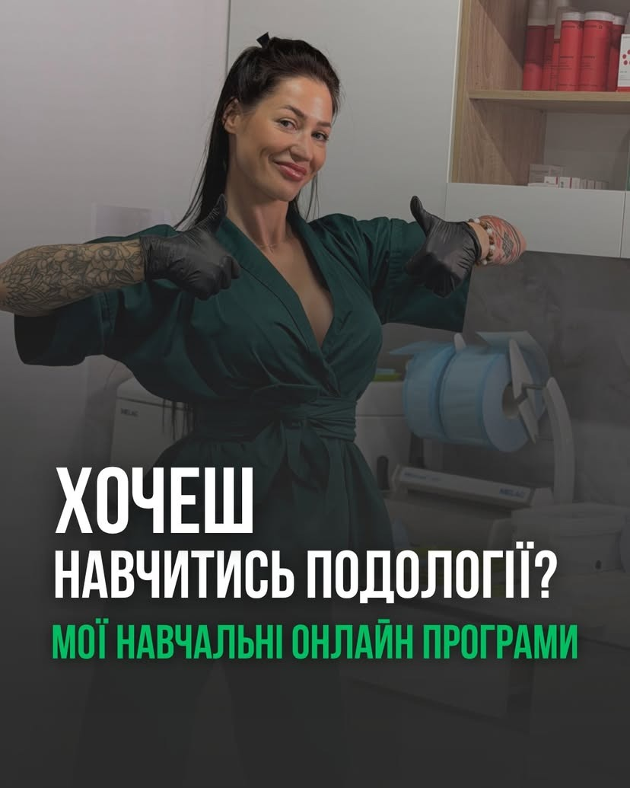
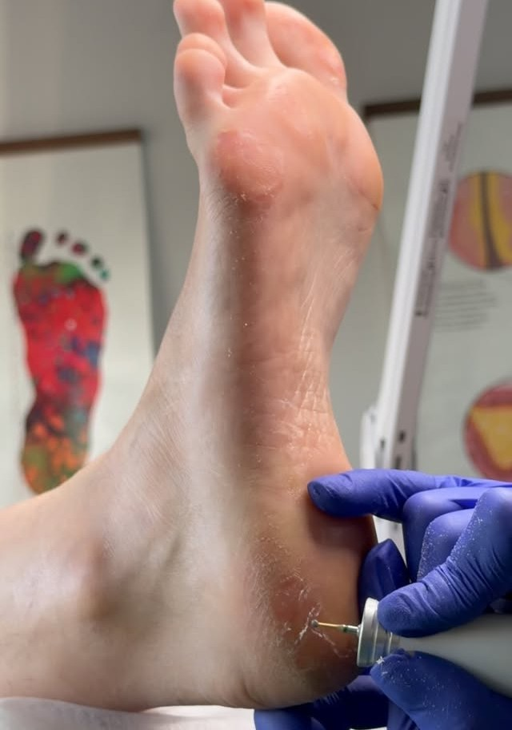
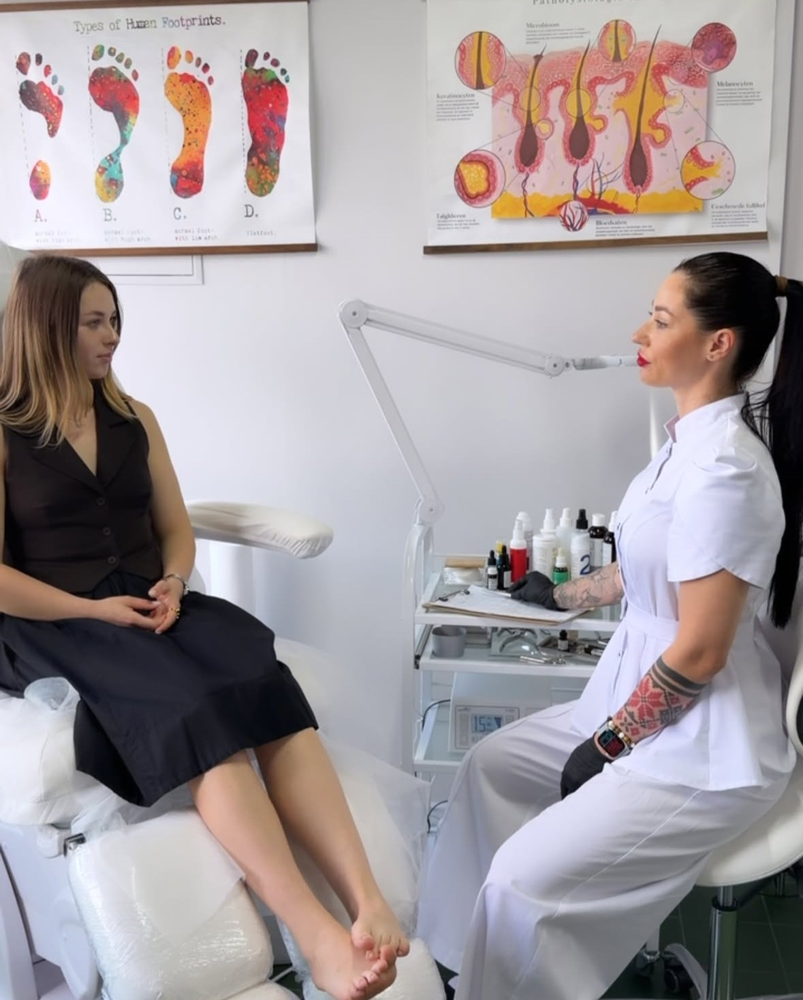

Професійне навчання клінічній подології
Перейдіть від звичайного естетичного педикюру до високооплачуваної медичної подології. Повна постановка руки на живих моделях, виправлення врослого нігтя титановою ниткою та автоклавування класу B.

Чому саме наше навчання?
Максимум практики та персональна увага наставника
МІНІ-ГРУПИ ДО 2 ОСІБ
Жодних лекцій на 20 людей. Христина особисто коригує кожен рух вашого інструменту та нахил фрези.

РЕАЛЬНІ МОДЕЛІ З ПАТОЛОГІЯМИ
Відпрацювання на 4–6 живих пацієнтах зі справжніми мозолями, тріщинами та врослими нігтями.

КОРЕКЦІЙНІ СИСТЕМИ
Опанування титанової нитки, що дозволяє брати від 1400 ₴ за процедуру одразу після випуску.
Програми курсів
Клінічна подологія: старт у професії
- Анатомія стопи, деформації шкіри та оніхопатології.
- Стерилізація за стандартами EN 13060, автоклавування B.
- Апаратна обробка глибоких тріщин та висвердлювання мозолів.
- Практика на 4–6 моделях під повним наглядом Христини.
Корекційні системи: Титанова нитка
- Біомеханіка розгинання нігтя нікель-титановим сплавом.
- Підбір товщини дроту (012, 014, 016) під патологію.
- Адгезивні композитні протоколи без сколів та відшарувань.
- Сертифікат та постійна підтримка у закритому чаті випускників.
Христина Жалейко
Практикуючий інструктор«Я не даю суху теорію. Я беру ваші руки та вчу відчувати тканини і глибину роботи інструмента»
Мої випускники відкривають власні кабінети в Україні та Європі або відразу переходять на чек клінічної подології. Навчання відбувається в діючому центрі в Ірпені на реальному обладнанні.